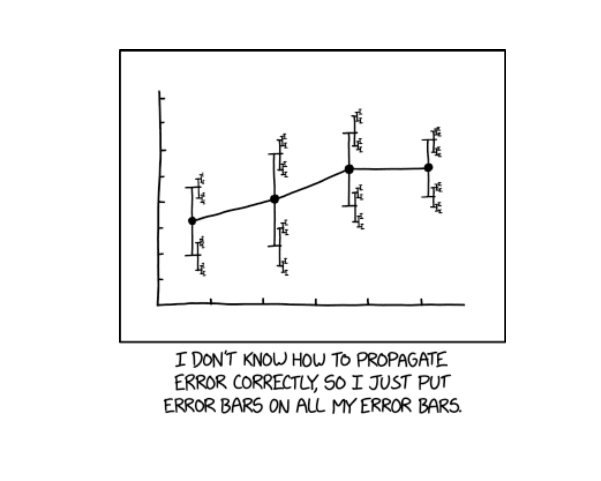
Lesson 18: Central Limit Theorem
Calendar
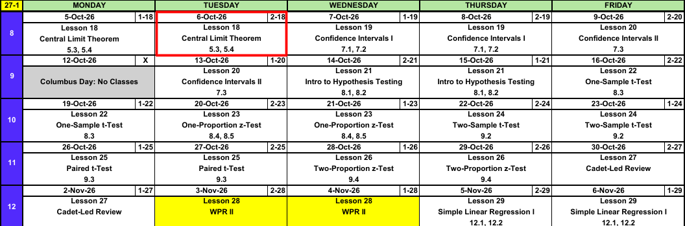
Block II: Statistical Inference
- Block I: we knew the distribution and found probabilities.
- Block II: we have a sample and say something about \(\mu\) or \(p\).
- Today is the bridge: how a sample mean behaves.
What We’re Doing: Lesson 18
Objectives
- Describe the sampling distribution of a statistic, including the sample mean \(\bar{X}\). (SLO 3)
- State and apply the Central Limit Theorem to approximate the distribution of \(\bar{X}\) and compute probabilities for \(\bar{X}\). (SLO 5)
- Apply the large-sample normal approximation to the sample proportion \(\hat{p} = X/n\). (SLO 5)
Required Reading
Devore 5.3, 5.4
Break!
Family
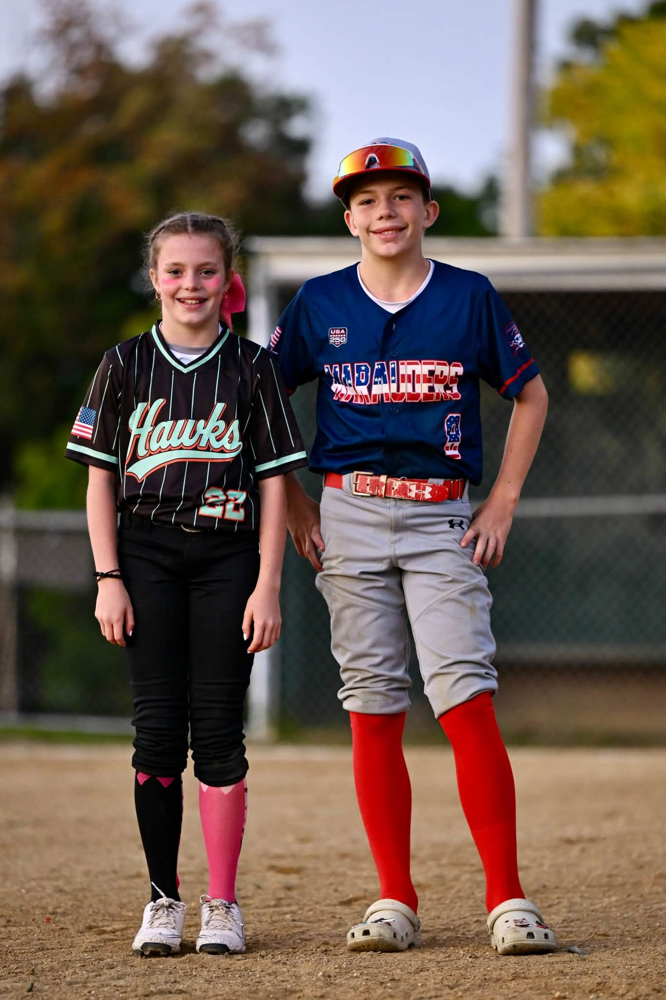
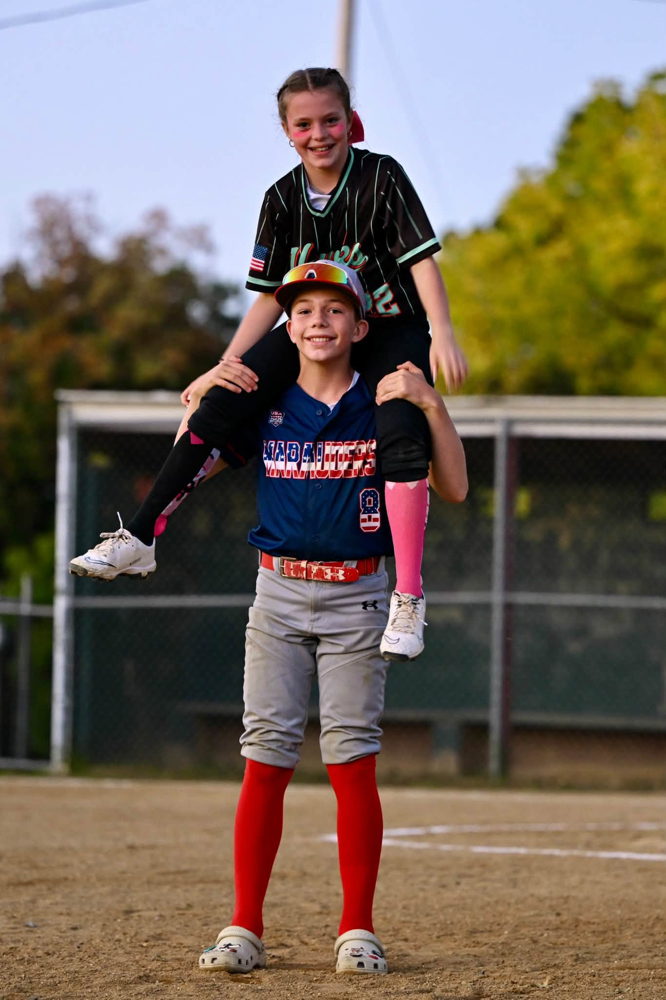
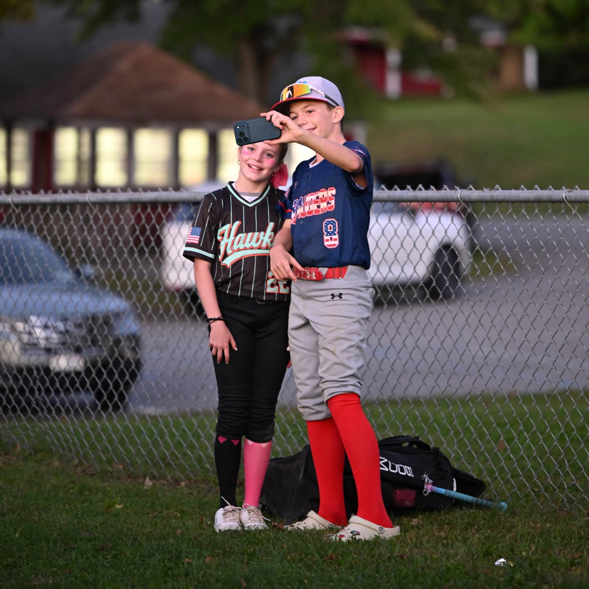
DMath Frisbee!!
Math vs DPE
NoteResult
3-0
12-7
Math vs CBSE
NoteResult
4-0
15-3
Math vs CBSE
NoteResult
5-0
15-2
Math vs DSE
NoteResult
6-0
15-3
Math vs EECS/PANE
NoteResult
7-0
15-3
Math vs BSL/SCPME
NoteResult
8-0
15-5
Course Lecture Follow Up
Last Block: Distributions
| story | \(X\) | distribution |
|---|---|---|
| \(10\) free throws, \(0.75\) each | number made | \(X \sim \text{Binom}(n = 10,\ p = 0.75)\) |
| \(6\) cadets per hour arrive | number in an hour | \(X \sim \text{Pois}(\mu = 6)\) |
| \(6\) cadets per hour arrive | hours until the next one | \(X \sim \text{Exp}(\lambda = 6)\) |
| Heights: mean \(70\) in, sd \(3\) in | one cadet’s height | \(X \sim N(\mu = 70,\ \sigma^2 = 3^2)\) |
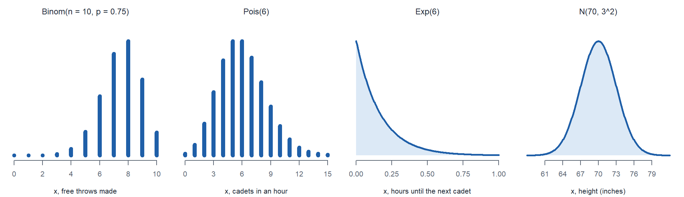
And Some Without Names
Discrete: tardies in a week
\[p(x) = \begin{cases} 0.4 & x = 0 \\ 0.3 & x = 1 \\ 0.2 & x = 2 \\ 0.1 & x = 3 \\ 0 & \text{otherwise} \end{cases}\]
Continuous: hours of study on a weeknight
\[f(x) = \begin{cases} \dfrac{x}{8} & 0 \le x \le 4 \\ 0 & \text{otherwise} \end{cases}\]
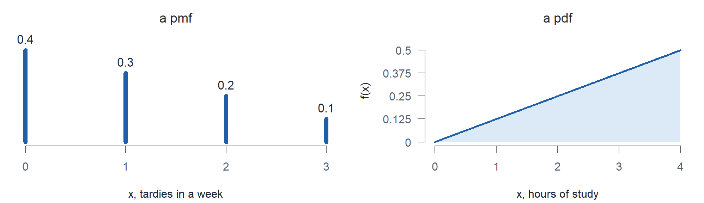
Without any further ado…
(The Big Reveal)
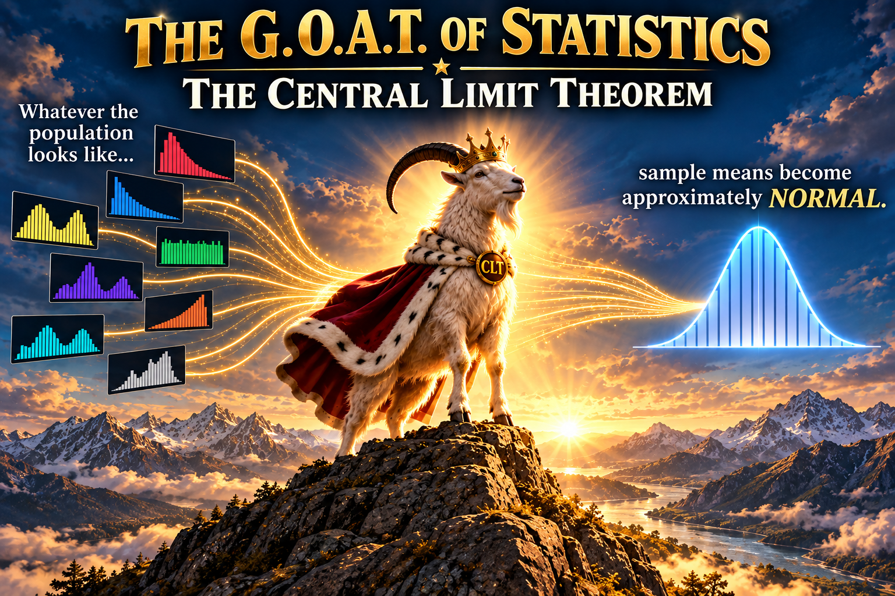
Tom Brady is the Central Limit Theorem of football.
The Takeaway for Today
NoteKey Concepts from Lesson 18
- Central Limit Theorem: \(\bar{X}\) is approximately \(N\left(\mu,\ \left(\dfrac{\sigma}{\sqrt{n}}\right)^2\right)\), whatever the population looks like
- Large enough: \(n > 40\). A normal population works for any \(n\)
pnorm(x, mu, sigma/sqrt(n)). The third slot is \(\sigma/\sqrt{n}\), not \(\sigma\)- \(\hat{p} = X/n\) is approximately \(N\left(p,\ \dfrac{p(1-p)}{n}\right)\) when \(np \ge 10\) and \(n(1-p) \ge 10\)
The Central Limit Theorem
Just like arrival rates have a distribution, and so does shooting free throws, so does \(\bar{X}\).
What does that mean? If we resample from a population over and over again, the sample mean will follow a distribution.
ImportantThe Distribution of the Sample Mean
\[\bar{X} \sim N\left(\mu,\ \left(\frac{\sigma}{\sqrt{n}}\right)^2\right)\]
- The mean is the mean of the underlying distribution, \(\mu\).
- The standard deviation is the standard deviation of the underlying distribution divided by the square root of the sample size, \(\dfrac{\sigma}{\sqrt{n}}\).
So what does this mean?
Imagine you don’t know anything about the underlying distribution. Take cadet 2 mile run times. We don’t actually know how they are distributed.
Say I sample 50 cadets.
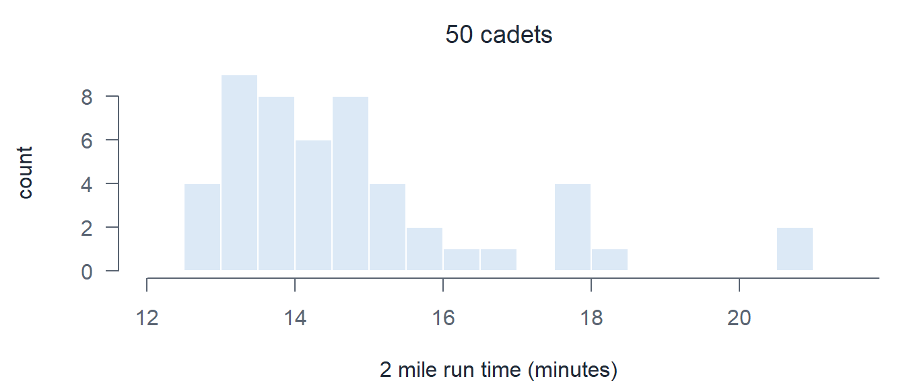
But I care about the average cadet run time. How is that distributed?
Let’s plot the average of those 50.
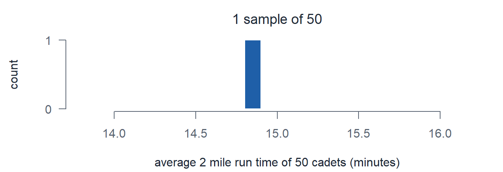
Now resample. 10 times.
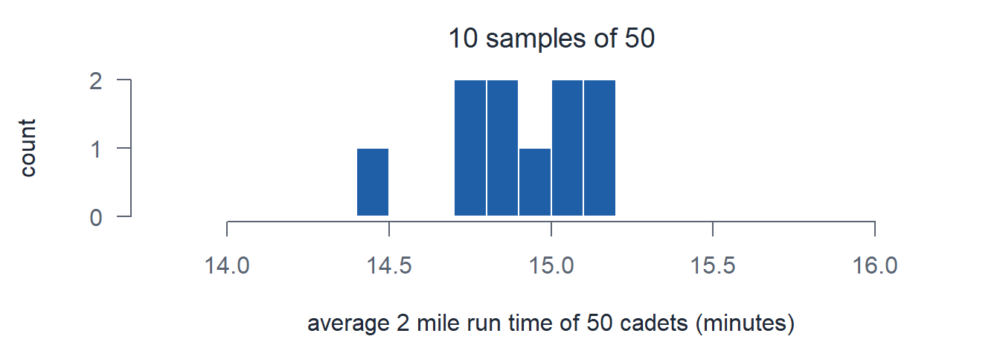
100 times.
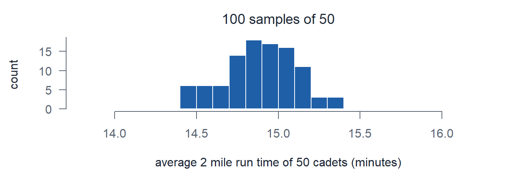
1,000 times.
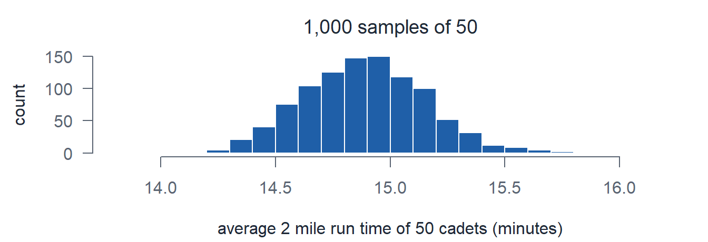
10,000 times.
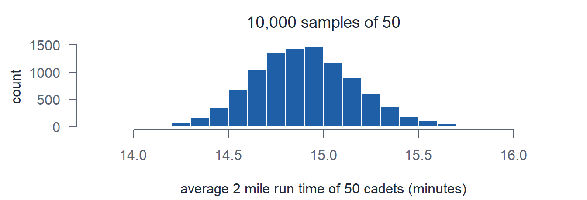
Does It Work for Any Distribution?
Heights
Here’s the distribution.
\[X \sim N(\mu = 70,\ \sigma^2 = 3^2)\]
\[\mu = 70 \qquad\qquad \sigma = 3\]
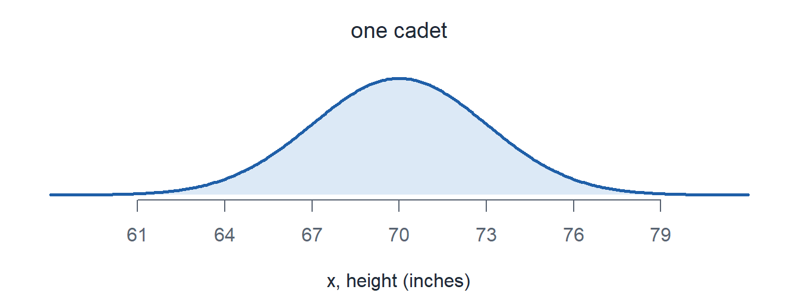
We sample \(n = 49\) cadets and average them. We do that 1,000 times.
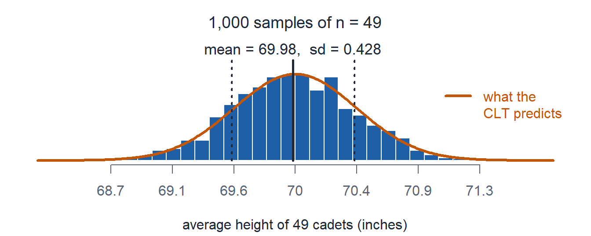
According to the CLT:
\[\bar{X} \sim N\left(\mu = 70,\ \sigma^2 = \left(\frac{3}{\sqrt{49}}\right)^2\right), \qquad \sigma_{\bar{X}} = \frac{3}{7} = 0.429\]
Free Throws
Here’s the distribution.
\[X \sim \text{Binom}(n = 10,\ p = 0.75)\]
\[\mu = np = 10(0.75) = 7.5 \qquad\qquad \sigma = \sqrt{np(1-p)} = \sqrt{10(0.75)(0.25)} = 1.369\]
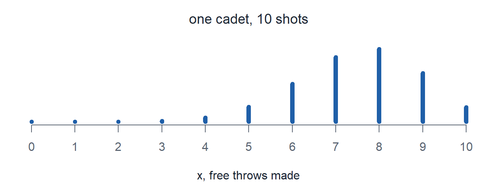
We sample \(n = 64\) cadets, 10 shots each and average them. We do that 1,000 times.
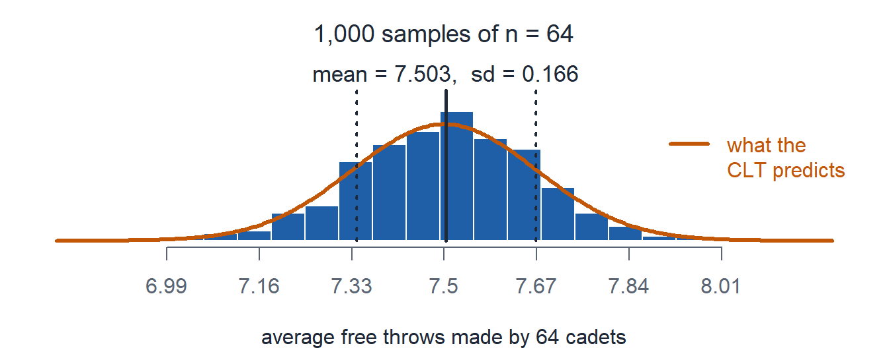
According to the CLT:
\[\bar{X} \sim N\left(\mu = 7.5,\ \sigma^2 = \left(\frac{1.369}{\sqrt{64}}\right)^2\right), \qquad \sigma_{\bar{X}} = \frac{1.369}{8} = 0.171\]
Arrivals in an Hour
Here’s the distribution.
\[X \sim \text{Pois}(\mu = 6)\]
\[\mu = 6 \qquad\qquad \sigma = \sqrt{\mu} = \sqrt{6} = 2.449\]
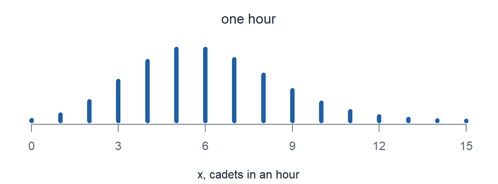
We sample \(n = 100\) hours and average them. We do that 1,000 times.
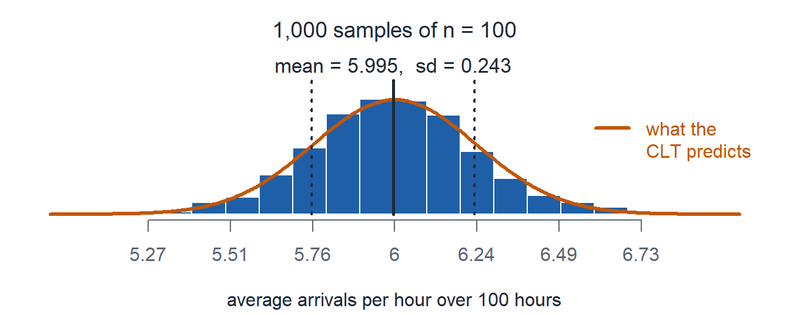
According to the CLT:
\[\bar{X} \sim N\left(\mu = 6,\ \sigma^2 = \left(\frac{2.449}{\sqrt{100}}\right)^2\right), \qquad \sigma_{\bar{X}} = \frac{2.449}{10} = 0.245\]
Wait for the Next Cadet
Here’s the distribution.
\[X \sim \text{Exp}(\lambda = 6)\]
\[\mu = \frac{1}{\lambda} = \frac{1}{6} = 0.167 \qquad\qquad \sigma = \frac{1}{\lambda} = \frac{1}{6} = 0.167\]
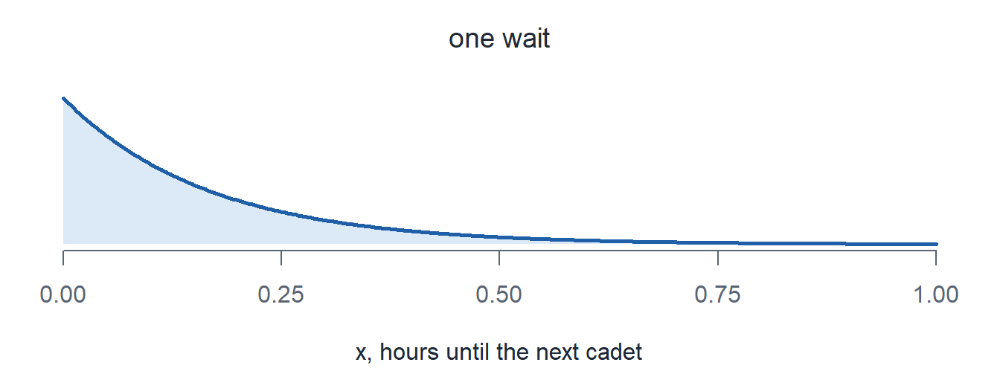
We sample \(n = 81\) waits and average them. We do that 1,000 times.
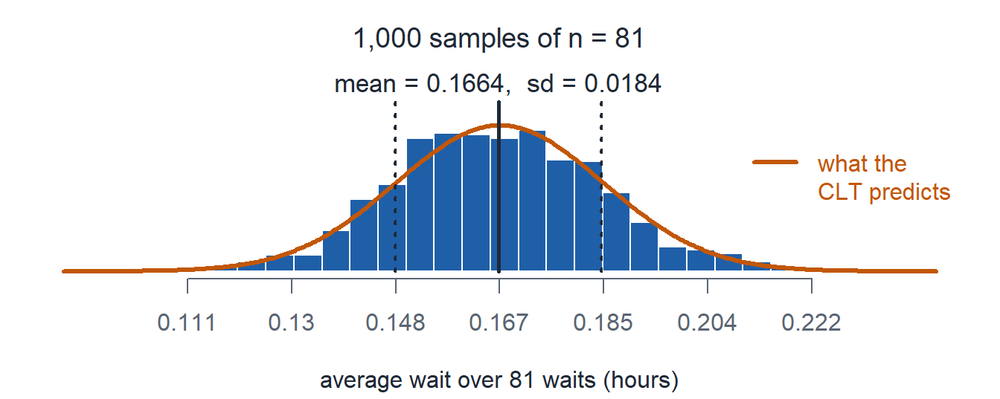
According to the CLT:
\[\bar{X} \sim N\left(\mu = 0.167,\ \sigma^2 = \left(\frac{0.167}{\sqrt{81}}\right)^2\right), \qquad \sigma_{\bar{X}} = \frac{0.167}{9} = 0.0185\]
Tardies, No Name
Here’s the distribution.
\[p(x) = \begin{cases} 0.4 & x = 0 \\ 0.3 & x = 1 \\ 0.2 & x = 2 \\ 0.1 & x = 3 \\ 0 & \text{otherwise} \end{cases}\]
\[\mu = \sum x\,p(x) = 1 \qquad\qquad \sigma = \sqrt{E(X^2) - \mu^2} = \sqrt{2 - 1^2} = 1\]
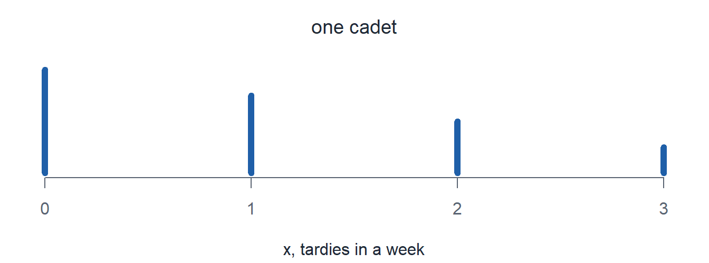
We sample \(n = 50\) cadets and average them. We do that 1,000 times.
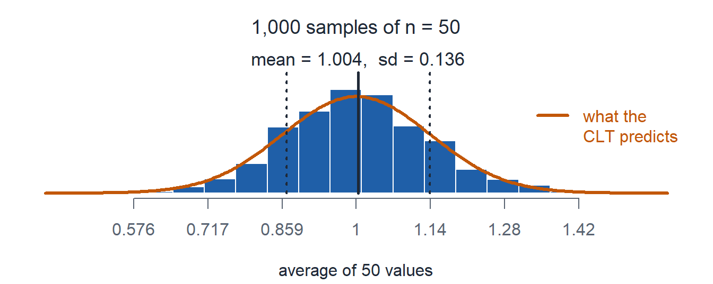
According to the CLT:
\[\bar{X} \sim N\left(\mu = 1,\ \sigma^2 = \left(\frac{1}{\sqrt{50}}\right)^2\right), \qquad \sigma_{\bar{X}} = \frac{1}{\sqrt{50}} = 0.141\]
Study Hours, No Name
Here’s the distribution.
\[f(x) = \begin{cases} \dfrac{x}{8} & 0 \le x \le 4 \\ 0 & \text{otherwise} \end{cases}\]
\[\mu = \int_0^4 x \cdot \frac{x}{8}\,dx = 2.667 \qquad\qquad \sigma = \sqrt{E(X^2) - \mu^2} = \sqrt{8 - 2.667^2} = 0.943\]
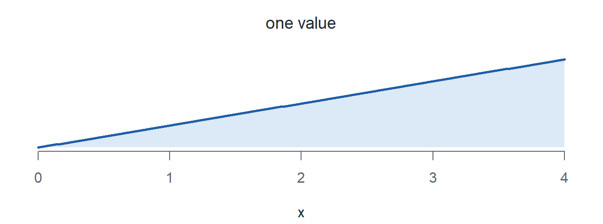
We sample \(n = 45\) cadets and average them. We do that 1,000 times.
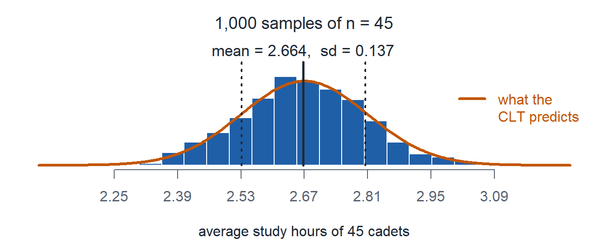
According to the CLT:
\[\bar{X} \sim N\left(\mu = 2.667,\ \sigma^2 = \left(\frac{0.943}{\sqrt{45}}\right)^2\right), \qquad \sigma_{\bar{X}} = \frac{0.943}{\sqrt{45}} = 0.141\]
How Large is “Large Enough”?
NoteRules of Thumb for CLT
The CLT approximation is good when:
For \(\bar{X}\) (sample mean):
- If the population is normal: CLT works for any \(n\)
- Otherwise: \(n > 40\)
Computing Probabilities for \(\bar{X}\)
ImportantSame pnorm, new standard deviation
\[P(\bar{X} \le x) = \texttt{pnorm(x, mu, sigma/sqrt(n))}\]
WarningWhere cadets go wrong
- \(\sigma\) in the third slot. That answers a question about one observation, not about \(\bar{X}\).
- Forgetting the square root. It is \(\sigma/\sqrt{n}\), not \(\sigma/n\).
Barbershop: one wait is \(X \sim \text{Exp}(\lambda = 1/14)\), so \(\mu = \sigma = 14\) minutes. A random sample of \(49\) cadets records their waits.
a) Fully specify the distribution of \(\bar{X}\).
TipAnswer
\[\bar{X} \sim N\left(\mu = 14,\ \sigma^2 = \left(\frac{14}{\sqrt{49}}\right)^2 = 2^2\right)\]
- Designate the random variable. \(\bar{X}\) is the mean wait of 49 cadets, in minutes.
- Name the distribution. Normal, approximately, by the CLT (\(49 > 40\)).
- Specify the parameters. \(\mu = 14\), \(\sigma_{\bar{X}} = 14/\sqrt{49} = 2\).
b) \(P(\bar{X} > 16)\)
TipAnswer
\[z = \frac{16 - 14}{14/\sqrt{49}} = 1, \qquad P(\bar{X} > 16) = P(Z > 1) = \mathbf{0.1587}\]
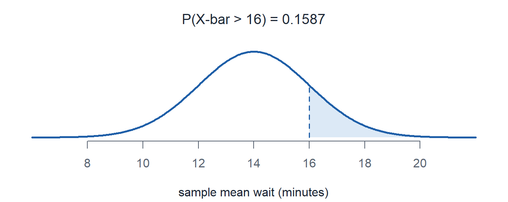
1 - pnorm(16, 14, 14/sqrt(49)) = 0.1587
c) \(P(12 < \bar{X} < 16)\)
TipAnswer
\[P(12 < \bar{X} < 16) = P(-1 < Z < 1) = \mathbf{0.6827}\]
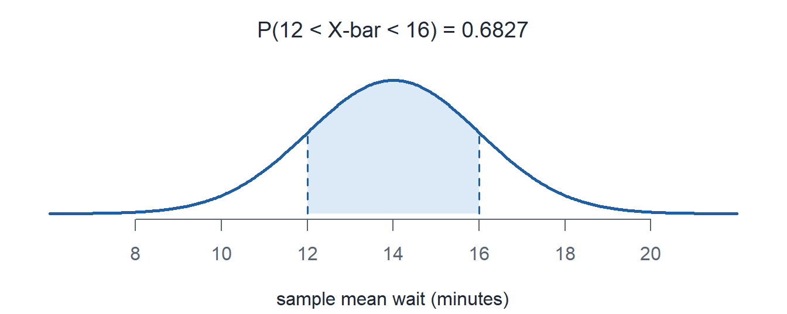
pnorm(16, 14, 14/sqrt(49)) - pnorm(12, 14, 14/sqrt(49)) = 0.6827
d) What is the probability one cadet waits more than 16 minutes?
TipAnswer
One observation, so no CLT. \(X \sim \text{Exp}(\lambda = 1/14)\).
\[P(X > 16) = e^{-16/14} = \mathbf{0.3189}\]
1 - pexp(16, 1/14) = 0.3189
e) Find the 95th percentile of \(\bar{X}\).
TipAnswer
\[14 + 1.645(2) = \mathbf{17.29} \text{ minutes}\]
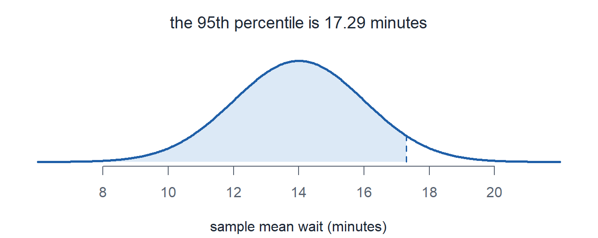
qnorm(0.95, 14, 14/sqrt(49)) = 17.2897
The Sample Proportion
ImportantThe sampling distribution of the sample proportion
\(X \sim \text{Binom}(n, p)\) counts successes in a sample of \(n\). The sample proportion is \(\hat{p} = X/n\).
\[E(\hat{p}) = p, \qquad \sigma_{\hat{p}} = \sqrt{\frac{p(1-p)}{n}}\]
When \(np \ge 10\) and \(n(1-p) \ge 10\),
\[\hat{p} \sim N\left(p,\ \frac{p(1-p)}{n}\right) \text{ approximately}\]
NoteWhy this is the CLT
Code each success as \(1\) and each failure as \(0\). Then \(\hat{p}\) is the sample mean of the \(1\)s and \(0\)s.
Coffee: \(40\%\) of cadets drink coffee before first hour. Take a random sample of \(150\) cadets.
Find \(P(\hat{p} > 0.46)\).
TipAnswer
\(np = 150(0.40) = 60 \ge 10\) and \(n(1-p) = 150(0.60) = 90 \ge 10\).
\[\hat{p} \sim N\left(\mu = 0.40,\ \sigma^2 = \frac{0.40(0.60)}{150} = 0.04^2\right)\]
\[z =\frac{0.46 - 0.40}{0.04} = 1.5, \qquad P(\hat{p} > 0.46) = P(Z > 1.5) = \mathbf{0.0668}\]
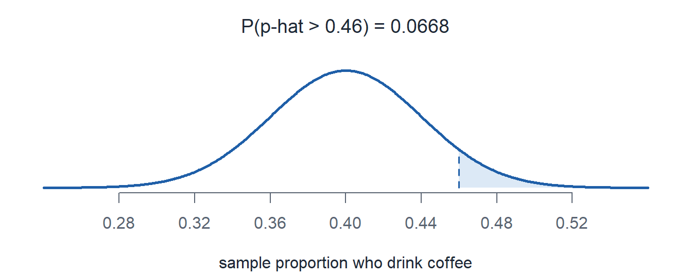
1 - pnorm(0.46, 0.40, sqrt(0.40 * 0.60 / 150)) = 0.0668
A Question for Next Lesson
Back to the 50 cadets and their 2 mile run times. Their average was \(\bar{x} = 14.81\) minutes with \(s = 1.86\) minutes.
We don’t know \(\mu\), the mean run time of all cadets. What can we say about it?
Start with what the CLT gives us.
\[P\left(-1.96 < \frac{\bar{X} - \mu}{\sigma/\sqrt{n}} < 1.96\right) = 0.95\]
Solve the inside for \(\mu\).
\[P\left(\bar{X} - 1.96\,\frac{\sigma}{\sqrt{n}} < \mu < \bar{X} + 1.96\,\frac{\sigma}{\sqrt{n}}\right) = 0.95\]
Plug in the sample. With \(n > 40\), \(s\) stands in for \(\sigma\).
\[14.81 \pm 1.96\,\frac{1.86}{\sqrt{50}} = (14.29,\ 15.33)\]
That is a 95% confidence interval for \(\mu\).
Board Problems
Problem 1: Ruck March
Times on a 12 mile ruck march are right skewed with \(\mu = 190\) minutes and \(\sigma = 28\) minutes. A random sample of \(49\) cadets rucks.
NoteQuestions
Can you find the probability one cadet finishes in under 180 minutes?
Fully specify the distribution of \(\bar{X}\).
Find \(P(\bar{X} < 180)\).
Find \(P(185 < \bar{X} < 195)\).
TipAnswers
No. One time is not normal, and we do not know its distribution.
\(\bar{X}\) is the mean time of the 49 cadets, in minutes. By the CLT (\(49 > 40\)),
\[\bar{X} \sim N\left(\mu = 190,\ \sigma^2 = \left(\frac{28}{\sqrt{49}}\right)^2 = 4^2\right)\]
- \[z = \frac{180 - 190}{4} = -2.5, \qquad P(\bar{X} < 180) = \mathbf{0.0062}\]
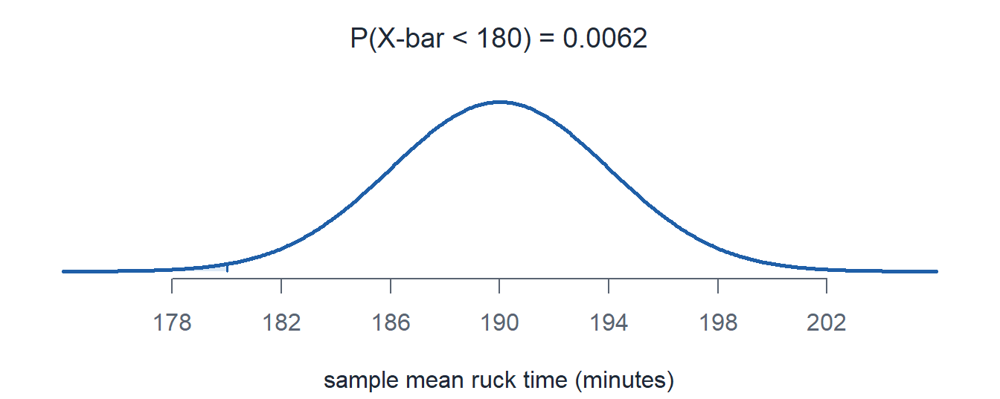
pnorm(180, 190, 28/sqrt(49)) = 0.0062
- \[P(185 < \bar{X} < 195) = P(-1.25 < Z < 1.25) = \mathbf{0.7887}\]
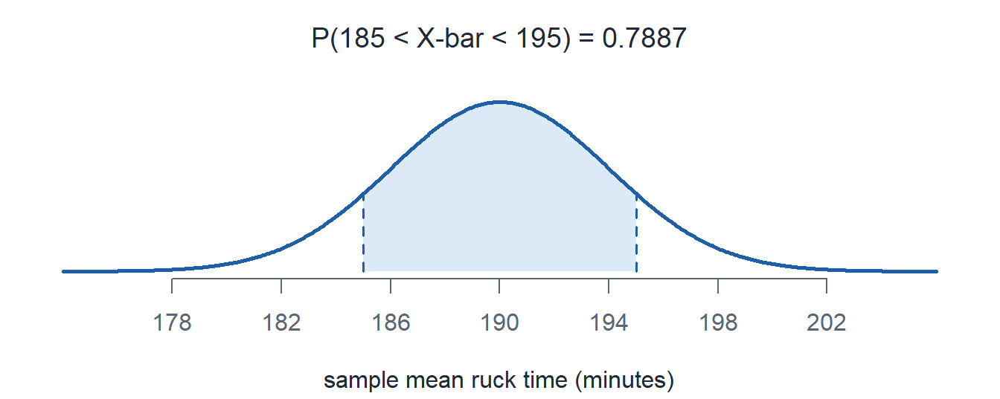
pnorm(195, 190, 4) - pnorm(185, 190, 4) = 0.7887
Problem 2: Two Mile Run
Two mile run times in a battalion are normal with \(\mu = 15\) minutes and \(\sigma = 1.5\) minutes. A squad of \(9\) soldiers is a random sample.
NoteQuestions
\(n = 9\) is not more than 40. Is \(\bar{X}\) normal?
Fully specify the distribution of \(\bar{X}\).
Find the probability the squad average is under 14 minutes.
Find the probability one soldier runs under 14 minutes.
How large a sample makes the standard error \(0.25\) minutes?
TipAnswers
Yes. The population is normal, so \(\bar{X}\) is exactly normal for any \(n\).
\(\bar{X}\) is the mean run time of the 9 soldiers, in minutes.
\[\bar{X} \sim N\left(\mu = 15,\ \sigma^2 = \left(\frac{1.5}{\sqrt{9}}\right)^2 = 0.5^2\right)\]
- \[z = \frac{14 - 15}{0.5} = -2, \qquad P(\bar{X} < 14) = \mathbf{0.0228}\]
pnorm(14, 15, 1.5/sqrt(9)) = 0.0228
- \[z = \frac{14 - 15}{1.5} = -0.67, \qquad P(X < 14) = \mathbf{0.2525}\]
pnorm(14, 15, 1.5) = 0.2525
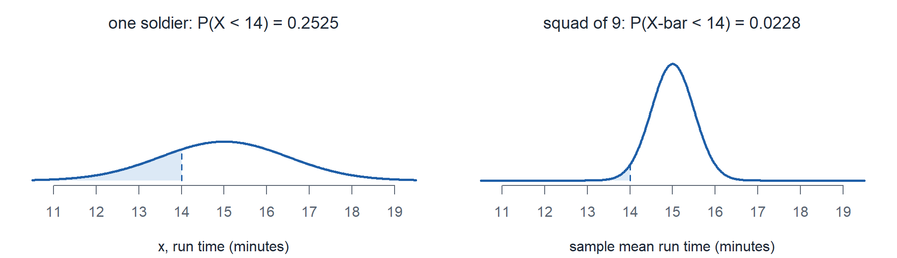
- \[\frac{1.5}{\sqrt{n}} = 0.25 \quad\Rightarrow\quad \sqrt{n} = 6 \quad\Rightarrow\quad n = \mathbf{36}\]
Problem 3: PMCS Faults
\(30\%\) of the vehicles in a brigade have a fault on their PMCS. An inspector takes a random sample of \(84\) vehicles.
NoteQuestions
Check the conditions for the normal approximation.
Fully specify the distribution of \(\hat{p}\).
Find the probability at most \(25\%\) of the sample has a fault.
Find \(P(0.25 < \hat{p} < 0.40)\).
TipAnswers
\(np = 84(0.30) = 25.2 \ge 10\) and \(n(1-p) = 84(0.70) = 58.8 \ge 10\).
\(\hat{p}\) is the proportion of the 84 vehicles with a fault.
\[\hat{p} \sim N\left(\mu = 0.30,\ \sigma^2 = \frac{0.30(0.70)}{84} = 0.05^2\right)\]
- \[z = \frac{0.25 - 0.30}{0.05} = -1, \qquad P(\hat{p} \le 0.25) = \mathbf{0.1587}\]
pnorm(0.25, 0.30, sqrt(0.30 * 0.70 / 84)) = 0.1587
- \[P(0.25 < \hat{p} < 0.40) = P(-1 < Z < 2) = \mathbf{0.8186}\]
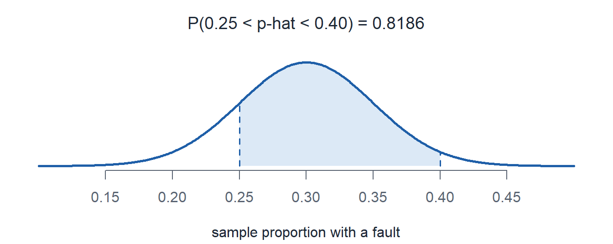
pnorm(0.40, 0.30, 0.05) - pnorm(0.25, 0.30, 0.05) = 0.8186
Problem 4: Radio Calls
A battalion TOC receives radio calls at an average rate of \(25\) per shift. Let \(X\) be the number of calls in one shift.
NoteQuestions
Fully specify the distribution of \(X\). Give \(\mu\) and \(\sigma\).
Find the probability one shift has more than 26 calls.
The counts on \(100\) shifts are a random sample. Fully specify the distribution of \(\bar{X}\).
Find the probability the mean over the 100 shifts is more than 26 calls.
TipAnswers
\(X \sim \text{Pois}(\mu = 25)\), with \(\mu = 25\) and \(\sigma = \sqrt{25} = 5\) calls.
One observation, so no CLT.
\[P(X > 26) = 1 - P(X \le 26) = \mathbf{0.3706}\]
1 - ppois(26, 25) = 0.3706
- \(\bar{X}\) is the mean number of calls per shift over the 100 shifts. By the CLT (\(100 > 40\)),
\[\bar{X} \sim N\left(\mu = 25,\ \sigma^2 = \left(\frac{5}{\sqrt{100}}\right)^2 = 0.5^2\right)\]
- \[z = \frac{26 - 25}{0.5} = 2, \qquad P(\bar{X} > 26) = \mathbf{0.0228}\]
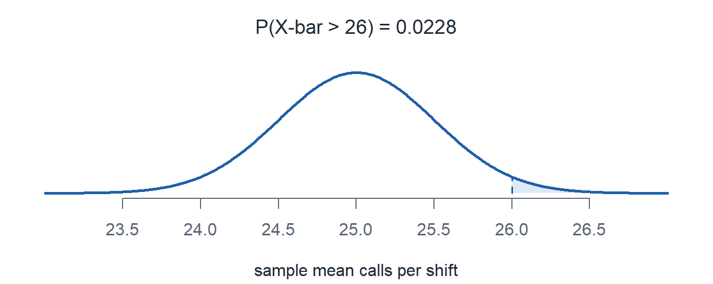
1 - pnorm(26, 25, 5/sqrt(100)) = 0.0228
Before You Leave
Today
- \(E(\bar{X}) = \mu\) and \(\sigma_{\bar{X}} = \sigma/\sqrt{n}\)
- Normal population: \(\bar{X}\) is normal for any \(n\). Any population: \(\bar{X}\) is approximately normal for \(n > 40\)
- \(\hat{p}\) is approximately \(N\left(p,\ p(1-p)/n\right)\) when \(np \ge 10\) and \(n(1-p) \ge 10\)
Any questions?
Next Lesson
Lesson 19: Confidence Intervals I
- Interpret a confidence level and the basic properties of a confidence interval
- Construct a large-sample confidence interval for a population mean
- Construct a large-sample confidence interval for a population proportion
Reading: Devore 7.1, 7.2
Upcoming Graded Events
- WebAssign 5.4: due at the start of Lesson 19
- EDA: due 11 October
- WPR II: Lesson 28 (covers Lessons 18-26)
- TEE: 15-18 Dec 2026